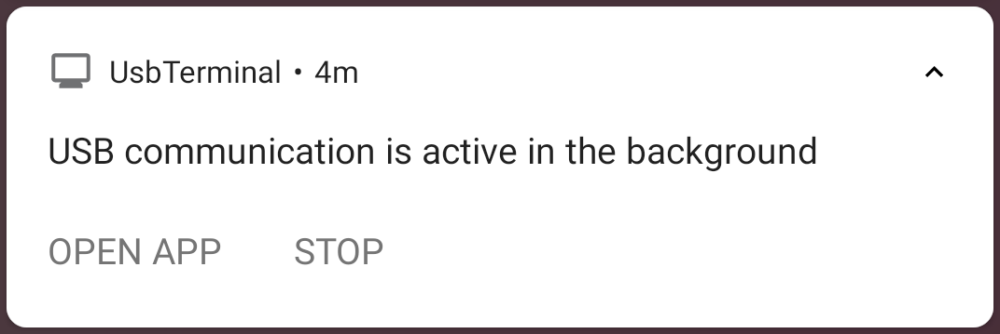

Control Keys Panel top
It is possible to send
control characters (e.g. Ctrl-C) and arrows escape-sequences.
This is done from the "Control Panel". To access the Control
Panel, click the "Controls" button
in the top bar.
In order to hide the Control
Panel, simply press the "Controls" button again.
Sending Control Characters top
When using the keyboard in "Auto" mode it is possible
to send control-characters (e.g. Ctrl-C).
Sending a control character is done by pressing the "Ctrl" button
in the Control Keys Panel and
then the specific character. For example, to send Ctrl-D, press the
Ctrl button and then 'D' or 'd' on the keyboard. When the Ctrl button
is pressed, it is marked with a red "LED" indicator.
After the control character is sent, this "LED" is turned off. If
you want to send another control character, repeat this process.
Arrow Keys top
The Control Keys Panel has four arrow-keys. Pressing
each one of these keys sends the appropriate escape-sequence.
Controlling DTR and CTS top
To set or reset the state of the serial port's DTR and CTS lines,
Select the appropriate action from the drop-down menu. To open
the drop-down menu press the three-dots icon on the right of
the top-bar.
Status Line top
At
the bottom of the display, below the main screen, the app displays a
status line. On the left side there's an "LED" indicating whether a USB
device is currently connected (green LED) or not (gray LED) or
some communication error occurred (red LED).
The rest of the status line displays the current status or error
messages.
Text/Hex display top
Data can be displayed in two ways:
- Text - This is the "normal" way. In this mode the app behaves
like a typical terminal
- Hex - In this mode data is displayed as a hex-dump.
It is possible to switch between these modes by clicking on the
button. When switching mode, you don't loose the buffered data, so you
can freely switch back and forth between these two modes.
Session Logging top
Session Logging can be enabled in the Settings/General screen.
If Session Logging is enabled, the app creates a log file every
time it is started (or when Session Logging is enabled after it
was disabled).
The log file contains a simple dump of every byte that was received
without any formatting. I.e. it may contain non-printable characters.
When Session Logging is enabled, you can choose to also log outgoing data.
Outgoing data can be simply logged together with the incoming data, or
it can be marked with a special mark. If you choose to mark outgoing data,
it is wrapped with "OUT{" and "}". E.g. the log file may contain
OUT{some output text}.
Log files can be accessed by clicking "Log Files" in the navigation drawer.
If your device has an application that can display plain text (it most
probably has), you can view a log file by selecting it and clicking the
View-File button in the top bar.
In order to send log files elsewhere, select the files you want to send,
and use the Share button to send them (e.g. you can email them using
your standard email app).
The log files are sorted by creation time. The sorting order can be
reversed by clicking the
button in the top bar.
The list of log files can be refreshed by swiping it down when at its top.
Default Sharing Email Addresses top
It is possible to set a Default Sharing Email Address(es) in Settings/General.
This is a list of comma-separated email addresses. When you share log files
by emailing them, these email addresses are automatically set as the recipient
address. This can save the need to re-type email addresses if you tend to
send log files to the same recipients (e.g. if you tend to send log files
to yourself, put your email address in this field).
Background Operation top
Background Operation can be enabled by selecting "Work also in the background"
in Settings/Terminal. When this mode is selected, the app will continue
to communicate with the USB device even if the user switches to another app.
Any data received during background operation is stored in the app's buffer,
and will be displayed when the user returns to the app. This data is also
logged if logging is enabled.
When the app is working in the background, a small terminal icon appears in
the device' notification bar. Pulling-down the notifications shade
provides access to the app's notification section. This looks like this:

Clicking on "OPEN APP" opens the UsbTerminal app. Clicking on "STOP" stops
the background operation and disconnect from the USB device.
Supported control characters and escape codes top
- \n - New line. Cursor moved one line down and to start of line
- \r - Carriage return. Cursor move to start of current line
- \b - Backspace. Cursor moved left one place unless it’s at the line’s beginning
- \t - Tab - Move cursor forward to next tab-stop (tab stops are 8 characters apart)
- \007 - ^G Bell. make a beep sound
- Esc [ Pn A - Cursor Up. Pn is number of lines to move. It is considered 1 if it's missing, 0 or 1
- Esc [ Pn B - Cursor Down. Pn is number of lines to move. It is considered 1 if it's missing, 0 or 1
- Esc [ Pn C - Cursor Forward. Pn is number of characters to move. It is considered 1 if it's missing, 0 or 1
- Esc [ Pn D - Cursor Backward. Pn is number of characters to move. It is considered 1 if it's missing, 0 or 1
- Esc [ Ps K -
Ps 0 or missing - Erase from cursor to EOL
Ps 1 - Erase from beginning of line to cursor
Ps 2 - Erase line containing cursor
- Esc [ Ps J -
Ps 0 or missing - Erase from cursor to end of screen
Ps 2 - Erase entire screen
- Esc [ H - Cursor to Home Position.
- Esc H - Cursor to Home Position. (Same as Esc[H)
- Esc [ Pn ; Pn H - Cursor Position. First parameter is line number and
the second is column
- Esc [ Ps n - DSR (Device Status Report)
Ps 6 - Terminal reports the current cursor position as
ESC [ n ; m R where n is the row and m is the column
Ps 5 - Terminal sends “OK” status report as Esc [ 0 n
- Esc [ ps ; ps ; ps... m - Select Graphic Rendition
Ps 0 - Clear all graphic renditions
Ps 30..37 and 90..97 - Set text color. For mapping of code to color
when selecting graphic rendition see
ANSI Escape Codes Colors.